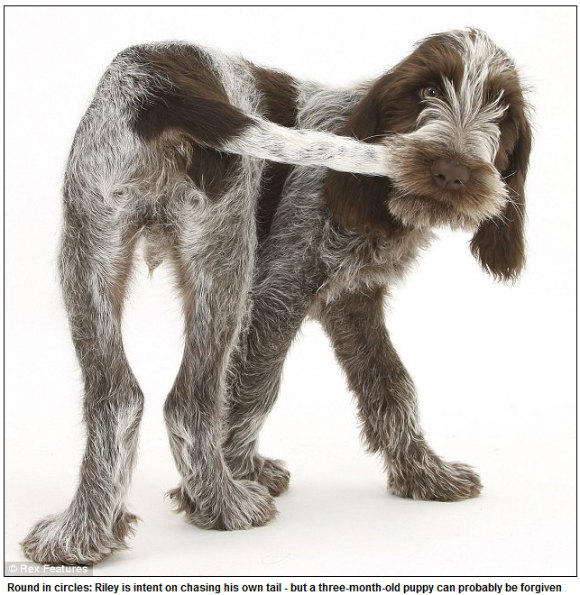

Array#delete_ifメソッド、Array#reject!メソッドはブロックの実行結果が真である要素を取りぞきます。Array#reject!メソッドには非破壊的メソッドであるArray#rejectがあります。Array#rejectはレシーバの内容は変更せず、与えたブロックの実行結果が真になった要素を取り除いた配列を返します。
a = [30,100,50,80,79,40,95]
a.delete_if {|x| x < 80} #=> [100, 80, 95]
p a #=> [100, 80, 95]
p a.reject {|x| x < 90} #=> [100, 95]
p a #=> [100, 80, 95]

